毕达哥拉斯或许是世界上名声最响亮的数学家，他因以其大名命名的关于三角形的定理而家喻户晓。然而，他在乘方及用乘方研究自然世界方面也有建树。
毕达哥拉斯定理（我们常称为“勾股定理”）是显示数学之美的一个典范。它易懂易用，时时可用，又揭示了世界的奥秘。提醒一下未曾领略或者业已忘怀这一点的人，它是这样的：三角形有个直角，即两条短边夹角为90°，跟长方形或正方形的角是一样的，这样的三角形的3条边的长度满足勾股定理，你可以用两条边的长度计算另一条边的长度。规则是h2=a2+b2，或者说，长边（弦h）长度的平方等于两条短边（a和b）长度的平方和。公元前6世纪，毕达哥拉斯对这一定理进行了证明，但是其实在他之前数百年勾股定理就已经投入实际应用了……
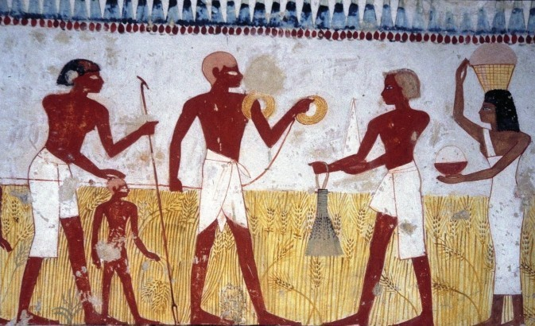
平方与根
在此我们需要对术语加以解释。平方就是一个数乘以它自己的结果（见第76页：乘方）。平方根则反之，它的平方就是你之前选定的那个数。所以，22是2×2=4。4的平方根，写作
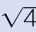
，就是2和-2。你既要会算平方，也得会算平方根，才能应用勾股定理。平方根乃是毕达哥拉斯数学生涯的最大困扰，我们稍后再叙，且看一道古埃及绳结问题。古埃及人知晓短边为3和4个单位长的直角三角形，长边是5个单位长。我们验算一下：32=3×3=9，42=4×4=16，9+16=25，所以25就是弦长的平方，25的平方根就是5（5×5=25）。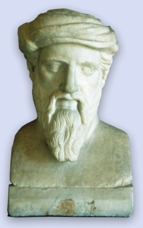
毕达哥拉斯公元前580年出生于土耳其附近的小岛萨摩斯岛。他在希腊城邦度过了大半生，也就是如今的意大利南部。
空间测绘
古埃及人知道边长为3、4、5的三角形必然有个直角，这在尼罗河畔进行田地测绘时太有用了。尼罗河年年洪水泛滥淹没农田，洪水退后出现新田。测绘者，人称引绳者，在法老治下工作，确保土地完美分配。引绳者用绳子标记又窄又长的地块，每条地块都得有合适的尺寸和形状，这至关重要。他们用12个绳结的绳圈来标记角。打结的绳圈就构成边长为3、4、5的三角形，有个完美的直角。这样便于保证每条地块宽度相同。3、4、5就称为勾股弦三元数，因为它们是满足勾股定理的3个整数。
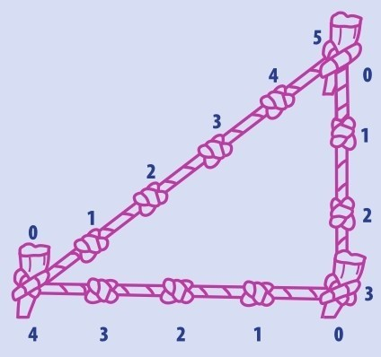
古埃及墓室壁画展示了如何用绳结来测绘田地。测绘者在绳子上打了12个等距的结，围成一个三角形，边长是3、4和5。这样使得每块田地都有完美的直角。
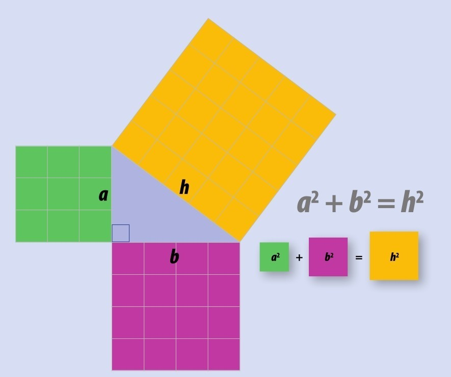
展示勾股定理的方式之一是用正方形。一个数进行平方运算相当于以它为边长做个正方形。如对a进行平方运算相当于以a为边长做个正方形。
绿色正方形的面积加上粉色正方形的面积等于黄色正方形的面积。数数小方格即可。这是对勾股定理最简单的证明。
数字是神圣的
毕达哥拉斯早就知道了有用的三元数3、4、5。他青年时代远赴埃及，甚或印度，学到了许多东西，尤其是数学。最终他来到古希腊城邦克罗顿（在如今意大利南部），建立了一个数学家的团体。当时人们深信是毕达哥拉斯提出并证明了毕达哥拉斯定理，但是专家认为他的许多发现其实是团体中其他人的成果。对于毕达哥拉斯和他的信徒而言，数字是神圣的。他们相信整个宇宙都是以整数建立的（在他们看来，分数并不是数）。对于他们而言，毕达哥拉斯三元数（勾股数）——比如5、12和13，9、40和41（自己验算一下）——乃是解开全部几何形状之谜的线索。他们认为这种数展现了神 的作品。
毕达哥拉斯数
毕达哥拉斯学派相信数字在自然界是永远存在的，他们的任务就是发现其功用。在表达数量之外，他们认为数字也代表其他含义：一是万数之源，代表缘由、本元和稳定；二则反之，代表不同与未知，它也代表阴性；三是一与二的加和，所以是和谐与完美的象征——是阳性；四代表正义，是人与自然的纽带；五是二与三的和，因此也是阴阳调和、连理相偕的象征；六代表强力非凡，它是二（阴）与三（阳）的乘积，引起新生命的诞生，六也是最小的完全数（见第66页）。现在你大概认为毕达哥拉斯十分古怪，他的邻人也有同感呐。
秘密社团
毕达哥拉斯学派是非常秘密的团体，成员甚是居高自傲。要想加入这个社团，你得通过非常难的数学考试。脑力绝佳的智者得通过一系列秘密仪式才能入社。成员的生活遵循一套“黄金法则”。其中很多法则我们如今是很认同的，比如鼓励温柔敦厚、俭行勤学。也有毕达哥拉斯学派是素食主义者的观点。我们对于毕达哥拉斯学派成员的生活法则知之甚少，需依据后人描绘。有些人乱堆史料，显得古人滑稽荒唐。比方，传说毕达哥拉斯学派害怕小白鸡，另外碰触豆子则糟糕透顶！
分门别类
毕达哥拉斯喜欢把数字分组。比方说，他把偶数分成3组：“偶偶”数就是能对半分开，再对半分开，如此一直到1的数，例如2、4和8。“奇偶”数是对半分开一次就得到一个非1的奇数的数，例如6、10和14。最后，12是第一个“奇奇”数，这种数能对半分开不止一次，最终得到一个非1的奇数（见第64~65页方框）。
音乐
有这样一个传说：毕达哥拉斯听到铁匠工作时锤子发出的声音十分震耳，他发现大锤的声音比小锤低，于是他弹拨各种长度的琴弦，来深探乐理。这是最早的用数学来描绘音乐以及音符与琴弦的关系的尝试。
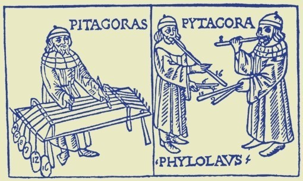
万数皆形
毕达哥拉斯学派很强调数字的可视化，他们或许还用各种形状的小石子来研究数学。他们发现，使用他们独创的特殊格式，各组数字可以表示不同形状。三角数是1、3、6、10和15，因为它们可以摞成三角形。四方数是1、4、9、16和25。这套系统从1开始不断扩展可构成更复杂的图形，比如五边形和六边形。
原子数
你已经注意到啦，上面提及的数都是整数。毕达哥拉斯相信自然界的任何事物都是由整数聚合成的，聚合的结果会越来越复杂，越来越多样。他认为万物之源是1，他用石子在地上摆出了最简单的三角形和四边形，然后构建了更复杂的结构。从某种角度上看，毕达哥拉斯对自然的观点确有其理。我们现在知道万物是由原子构成的，原子再组成分子，跟他用1构成的图形十分相似。
平方问题
毕达哥拉斯认为小数不属于自然界。
无理数
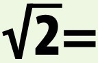
2的平方根介乎1与2之间，但是没法完全写出来，是一个无限不循环小数！这就是无理数，也就是说它不能表示为分数。
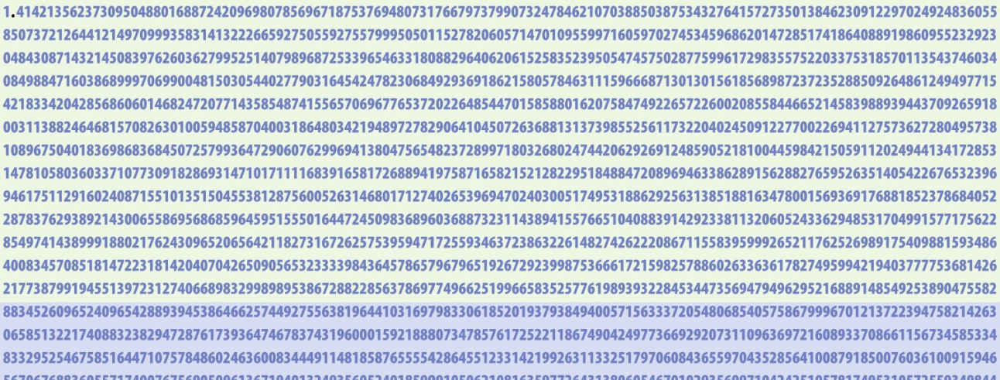
他说任何事物都可以用整数解释。但是，这个想法有个大问题，恰恰来自勾股定理本身。考虑一下正方形，问题来了。正方形有4条长度相等的边，我们可以认为边长是1。现在从一个角画一条对角线，就得到两个直角三角形。它的弦有多长呢？勾和股都是1，计算倒是很容易。1的平方是1（1×1=1），所以勾与股的平方和就是1+1=2。因此，弦长就是2的平方根，或者说√2。什么数自乘等于2？这可没有整数解，只有一串复杂的小数（见下部方框）。所以，这个勾股定理的简单的例子表明毕达哥拉斯的理念并不成立！这成了毕达哥拉斯学派秘而不宣之事，多言者，斩！
希帕索斯
希帕索斯是毕达哥拉斯的门徒，传说是他发现了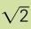
的问题。有人说他把这个大难题泄露出去了。故事的后来，希帕索斯与毕达哥拉斯出海钓鱼，只有毕达哥拉斯全身而返！
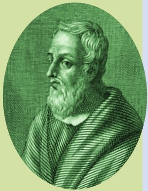
残酷结局
毕达哥拉斯约于公元前500年逝世。传说克罗顿本地居民与其学派争辩失败，于是谋杀了他。（毕达哥拉斯为枪所指，原拟奔逃，为豆田所羁。因其教旨，他不能进入豆田，于是被捕，受死。）如果这是真的——我们对毕达哥拉斯所知之事多有疑点——这倒不愧为一代数学宗师之死。
三角之外
显而易见，勾股定理在今天依然适用，对它继续探索的另一位大数学家是欧几里得，毕达哥拉斯之后200年的古希腊数学大师。欧几里得成功展示了勾股数有无穷多组。勾股数的形态迄今人们仍在研究。欧几里得也展示了所有交叉的线可以用勾股定理刻画，因为它们可以构造成直角三角形的两条边。不符合这个的只有永不相交的平行线。中国数学家早在公元前3世纪就开始使用勾股定理，伊斯兰学者研发了多种新方法来证明它。公元11世纪，波斯数学家阿尔比鲁尼甚至以此计算地球的大小。但是最终，毕达哥拉斯最惊艳的发现正是他保守秘密的那个数——
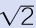
，这个数打开了数学的新领域。参见：
▶π，第68页
▶乘方，第76页
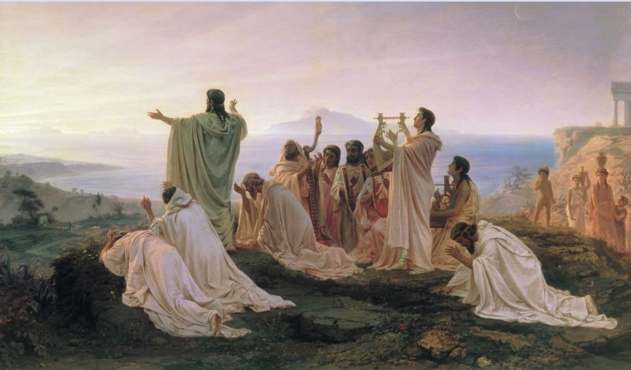
毕达哥拉斯学派既是数学学派，也是宗教团体。毕达哥拉斯与其门徒相信人会重生，认为人的灵魂会转世成动物形态。他的门徒在他死后仍传道授业数百年之久。
原理
勾股数有无穷多组，构成了各种各样形状和大小的边长为整数的直角三角形。（图为示意，未按比例。）
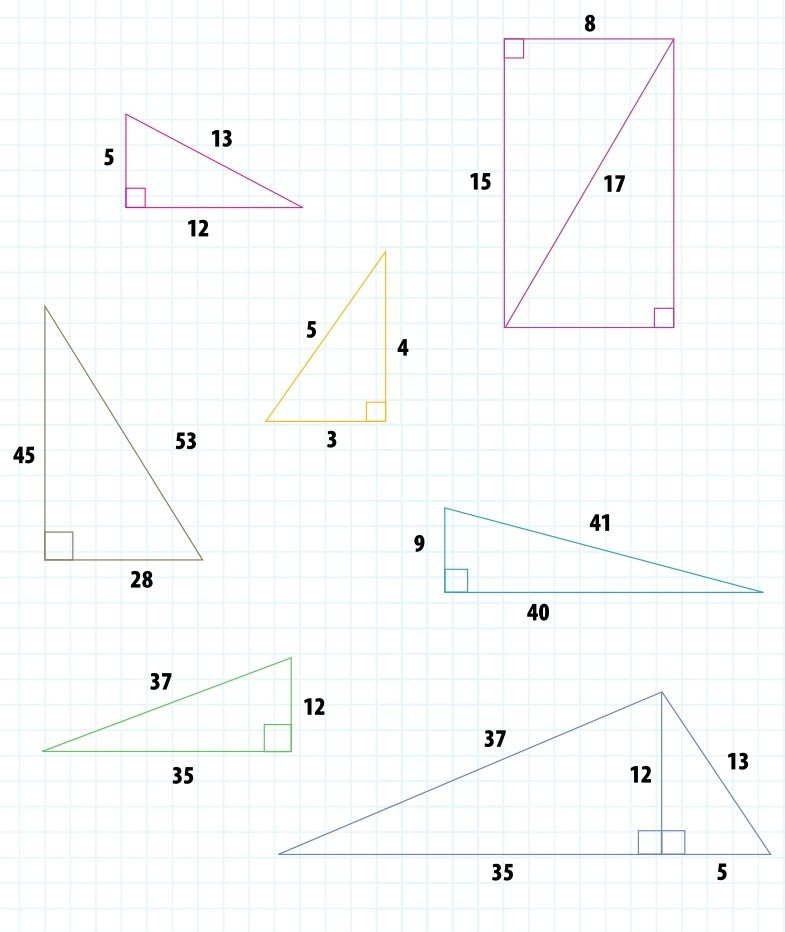